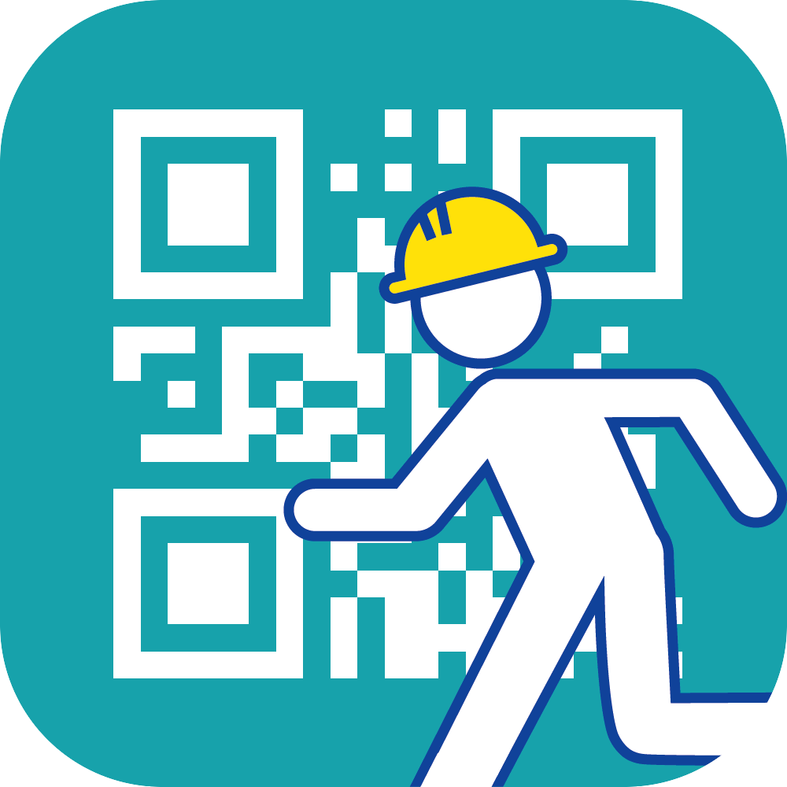

Works
App
アプリ開発部
アプリ開発部は，2013年の6月に発足してから数々のアプリをリリースしてきました．飯村研究室の中のスキルアップの場の一つであり，勉強しながら企画・デザイン・開発を進めています．最近は，外部との共同でのプロジェクトも進んでいます．
開発部門
企画・デザイン部門
白亜祭2019



災ボラ
ゆにおん


App
開発部門
企画・デザイン部門
白亜祭2019
災ボラ
ゆにおん
Movie
ムービー制作部は，「映像」という方法を使ってアイデアを形にしていくことを目的に2013年に発足しました．これまでにコンテスト作品の制作や，産学連携・学官連携のプロジェクトで作品制作を行っており熊本県警察様と共同で交通安全啓発のCM「Keep On Shining」「反射材ヒーロー」などを制作しました．
アイデアを目に見える形にし，映像の構成を練る，
監督.
世界の一瞬一瞬をカメラでとらえ映像にする，
撮影
切り取られた一瞬を繋ぎ合わせた作品にしていく，
編集．
音を使って映像に様々なスパイスを加える，
音響.
ただ作るのではなく細部までこだわり，魅せる，
美術．
それぞれの役割が化学反応を起こし，この世にひとつの映像を作り上げます．ほぼ全員が映像制作初心者．より多くの人に心に響く映像を目指し，チームワークを武器に日々活動しています．
熊本電気鉄道株式会社様
×
ムービー制作部
熊本県警察交通企画課様・熊本県安全推進連盟様
×
ムービー制作部
熊本県警察様
×
ムービー制作部
Education
Intelleggs!（インテレッグス）は，プログラミングや映像制作，最新のICT・IoTデバイスを活用したワークショップなど，「アプリ開発部」と「ムービー制作部」などの活動で得た知識やスキルを生かし，学習環境のデザインを行うサブゼミ団体です．
2012年，本団体による初めてのワークショップ「SKPUK〜体がコントローラー！？Scratchで作る体験型プログラミング教室〜」を企画・開催して以降，スマートフォンアプリ開発体験，映像制作体験，ロボットプログラミング体験など，多岐にわたるワークショップを，企画，開催しています．これまでに開催したワークショップは大小合わせ20回を超え，参加延べ人数は300名を超えます（2019年5月現在）．また,2018年12月には，熊本市教育委員会様，株式会社NTTドコモ様と共同で，世界的なイベントである「Computer Science Education Week(CSEdWeek)2018 in Kumamoto」を熊本市で初めて開催しました．

阿蘇市の観光地の認知度向上を目的とし，阿蘇市役所観光課の方と共同でアプリ開発を行っています．アプリを通して，有名な観光地やまだ知られていない阿蘇の名所など，一箇所でも多くの観光地に足を運んでもらえるような仕組みとなっています．実装は6月を予定しています．阿蘇に遊びに行く機会があれば是非インストールしてみてください！
小学校防災教育の質の向上を目的とした，iPad向け水害防災アプリです．カメラで周囲を写すと，ARによる浸水イメージが重ねられ，視覚的に水害状況を理解することができます．また，防災クイズ，ハザードマップ機能により，ゲーム感覚で防災知識やハザードマップを読む力を身につけることができます．
私たちのチームはApple Watchの心拍数測定機能を利用し，心拍数の変動を介したコミュニケーション方法で，うまく自分の意思を相手に伝えることが難しい障害を持った人々の力となるべく，未知のシステムではありますが，日々研究に取り組んでいます．